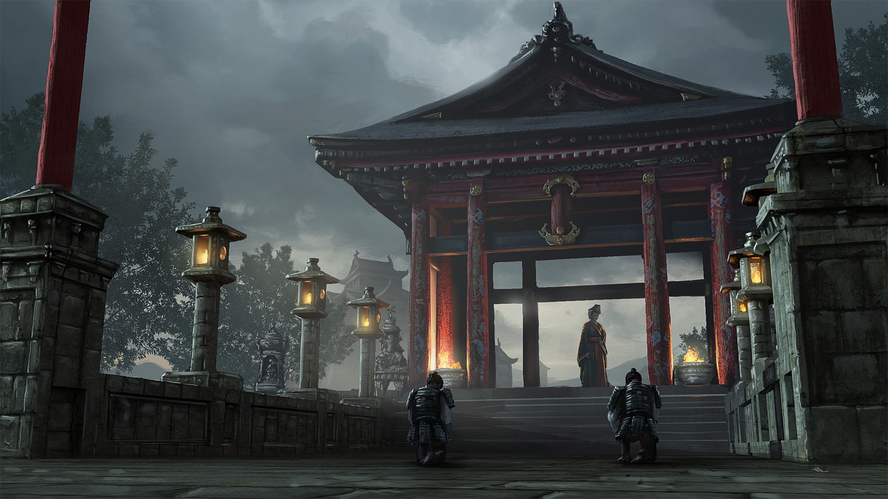

Érala decide convertirse en aprendiz de la sacerdotisa del templo, acrecentando su ambición y sed de poder cada día que pasa. Pronto muestra talento para los rituales y las ceremonias sagradas, y llega a dominar las artes místicas en pocos años.
Tras muchos años, su predecesora, satisfecha y orgullosa, le legó el control del templo en su partida, lo que significó que la poderosa joven ejerció influencia y control sobre la sociedad y estructura de la ciudad. Gracias a su educación en el valle, sus viajes y experiencias con comerciantes y su conocimiento de la jerarquía socioeconómica del lugar, conocía el corazón de las gentes y cómo manipularlo, volviéndose más y más retorcida y malvada con el tiempo.
Érala se convirtió en la suma sacerdotisa y reinó desde las sombras del templo sobre con afán ambicioso para engrandecer su poder y su riqueza, cumpliendo su sueño de tener una vida llena de excitantes sucesos.
